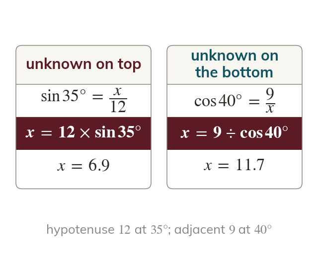
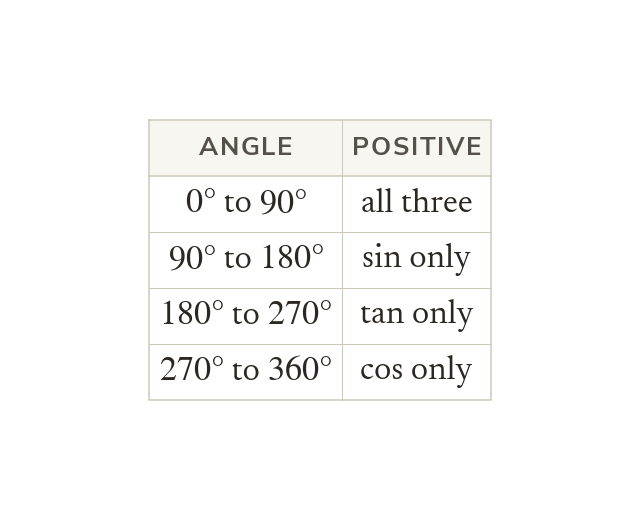

Label from the angle
The hypotenuse is always opposite the right angle. Opposite and adjacent depend on which angle is marked.
Sin, cos and tan began as ratios in right-angled triangles. This lesson tightens that method, then frees the three ratios to work for an angle of any size.
Work down the page at your own pace. Write every answer in your book first, then click to check it.
Read each card, then follow the worked examples one step at a time.
The hypotenuse is always opposite the right angle. Opposite and adjacent depend on which angle is marked.

An unknown on top of the ratio is found by multiplying. An unknown on the bottom is found by dividing.
Both angles are measured from the horizontal. The angle of depression equals the angle of elevation back up, as alternate angles.
Pick an answer. If it's wrong, the feedback tells you which mistake it was.
Section Trigonometry in two dimensions Exercise questions finding missing sides and angles in right-angled triangles, and the angle of elevation and depression problems.
Read each card, then follow the worked examples one step at a time.
An angle is measured anticlockwise from the positive x-axis. Its point on the unit circle is (cos θ, sin θ).

Each ratio takes its sign from the point's coordinates. The table shows which ratios are positive in each quadrant.
Pick an answer. If it's wrong, the feedback tells you which mistake it was.
Section Trigonometric functions for angles of any size The section has no exercise of its own: its practice comes in Exercise 6E after the graphs.
Finished? Next lesson: 6.8-6.9-6.10a Trigonometric Graphs and Equations.
Log in, then search for a code to practise that skill.